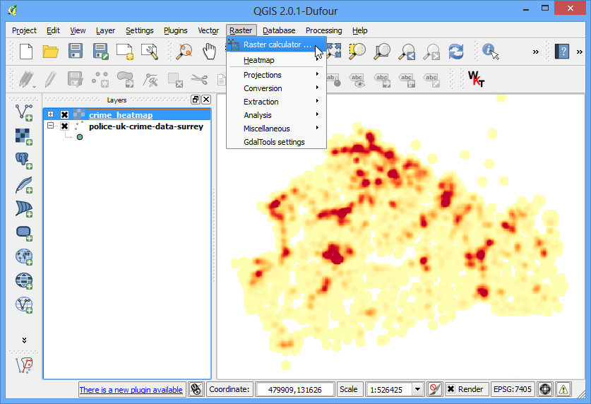

Creating Heatmaps
[ Download PDF A4 Letter ]
Heatmaps are one of the best visualization tools for dense point data. Heatmaps are used to easily identify find clusters where there is a high concentration of activity. They are also useful for doing cluster analysis or hotspot analysis.
Overview of the task
We will work with a dataset of crime locations in Surrey, UK for the year 2011 and find crime hotspots in the county.
Procedure
- To start, unzip the data to a folder. The data is in a CSV format. We will import this data into QGIS. (see Importing Spreadsheets or CSV files. for more details). Click .

- Browse to the police-uk-crime-data-surrey.txt file on your computer and open it. Select CSV (comma separated values) as the file format. You will see the Easting and Northing columns automatically selected as X and Y fields. Make sure you check the Use spatial index option as that will speed up your operations on this layer. Click OK.

- You may see some errors. You can ignore those for the purpose of this tutorials. Click Close.

- Next, you need to choose a Coordinate Reference System (CRS). If you read the data description, you will notice that the spatial reference for the data is British National Grid. Choose OSGB 1936 / British National Grid as the CRS. Click OK.

- Now you will see the data loaded into QGIS.

- Zoom-in a bit closer to get a better look at the data. You will notice that the data is quite dense and it is hard to get an idea of where there is a high concentration of points. This is where a heatmap will come in handy.

- To create the heatmap, you need to enable a core plugin named Heatmap. See Using Plugins to know how to enable built-in plugins. Once you have enabled the plugin, go to .

- In the Heatmap Plugin dialog, choose crime_heatmap as the name out the Output raster. Enter 1000 map units as the Radius. Radius is the area around each point that will be used to calculate the heat a pixel received. Check the Advanced so we can specify the output size of our heatmap. Enter 100 as Cell Size X and Cell Size Y. Click OK.

- Once the processing is finished, you will see a grayscale heatmap loaded into the canvas.

- Let’s make our heatmap look more like the traditional heatmap you often see. Right-click on the heatmap layer and click Properties.

- In the Style tab, select Singleband pseudocolor as the Render type. Next, under the section Load min/max values, select the Actual (slower) as the Accuracy and click Load. This will scan the heatmap and find the minimum and maximum pixel values. These values will be used to generate an appropriate color ramp. In the section Generate new color map, select YlOrRd (Yellow-Orange-Red) as the color ramp, and click Classify. Click OK.

- Now you will see a more appealing heatmap-like rendering of the layer. You can select the Identify tool and click on any pixel of the heatmap. You will see the pixel value in the resulting pop-up. This pixel-value is a measure of how many points from the source layer are contained within the specified radius ( in our case - 1000m) around the pixel.

- Now you have your heatmap. It is useful for visual interpretation, but not very useful if you want to use these results in analysis. Many times, you want to identify the hotspots whese there is high-concentration of points. We will now try to identify such hotspots using this heatmap. Go to .

- You will have to decide on a threshold value first. All pixel values above that threshold will be considered to be in a cluster. Let’s use a value of 5 for this data. In Raster calculator dialog, name the output layer as crime_hotspots. Double-click on crime_heatmap@1 under the Raster bands section and it will be added to the Raster calculator expression textarea. Complete the expression as “crime_heatmap@1” > 5. Check the box next to Add result to project and OK.

- A new layer will be added to QGIS. This layer has pixels with values of either 0 or 1. All pixels in the input layer where the pixel value was larger than 5 now have a value of 1 and all remianing pixels are 0. Click on .

- Name the output file as crime_hotspots_vector. Check the box next to Field name as well as Load into canvas when finished. Click OK.

- Once the conversion finishes, you will have yet another layer added to QGIS. This is the vector representation of the clusters that were created in the previous step. The layers contain clusters with both 0 and 1 values. Let’s filter out the 0 values, so we get the clusters of hotspots. Right-click on the layer and select Open Attribute Table.

- In the Attribute table, click on Select feature using an expression.

- Enter the expression as “DN” = 1 and click Select. Next, click on Close.

- In the mian QGIS window, you will see some features highlighted in yellow. These are the features that matched our query. Right-click on the layer and select Save Selection As....

- Name the output layer as crime_clusters. Check the box next to Add saved file to map and click OK.

- There you have it. The final layer contains the hotspots extracted from the heatmap. These clusters are the intelligence gathered from the raw data and can provide useful insights as well as serve as an input for further action.